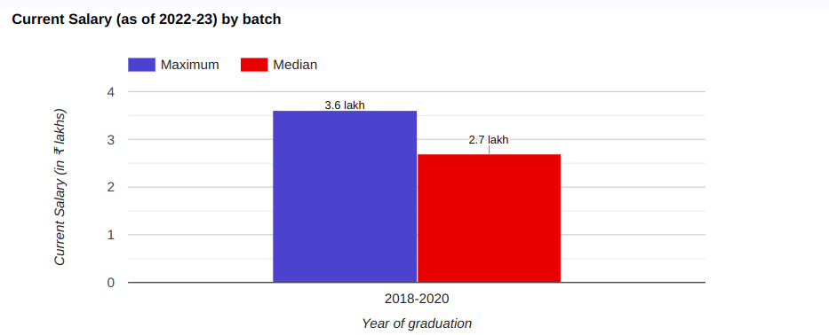

A renowned institution of higher learning, Pimpri Chinchwad College of Engineering and Research has its roots in Pune, Maharashtra since 2014. A student can pursue these 9 courses as Degree in Full Time mode. Pimpri Chinchwad College of Engineering and Research offers a variety of 9 UG courses. Pimpri Chinchwad College of Engineering and Research present collection of courses like B.E. / B.Tech in the specialized fields of Engineering. Students can choose stream and specialization of their choice. Pimpri Chinchwad College of Engineering and Research offers its students to gain professional expertize through its trained & experienced faculty in studies of Mechanical Engineering, Civil Engineering, Computer Science Engineering, Electronics Engineering, Information Technology. Pimpri Chinchwad College of Engineering and Research also has it's courses approved by prestigious approving bodies like AICTE. Overall, courses are available for an intake of 420 from the most aspiring students for higher learning. Institute offers great infrastructure with facilities like Auditorium, Boys Hostel, Cafeteria, Girls Hostel, Gym, Hospital / Medical Facilities, Hostel, Labs, Library, Shuttle Service, Sports Complex, Wi-Fi Campus, Others - Playground, EMIT & Communication Lab, Programming Laboratory, Software Lab, Operating System Lab, Database Lab, Surveying Lab, Geotechnical Engineering lab, CAD/CAM Lab, Fluid Mechanics Lab, Thermal Engineering Lab, Theory of Machines Lab, DSAL/OOPS Lab, Integrated Circuits Lab, Digital Electronics Lab, Reading Hall, Workshop, Seminar Hall, Cultural hall to students.
Programs Offered:

Placement Graph :
